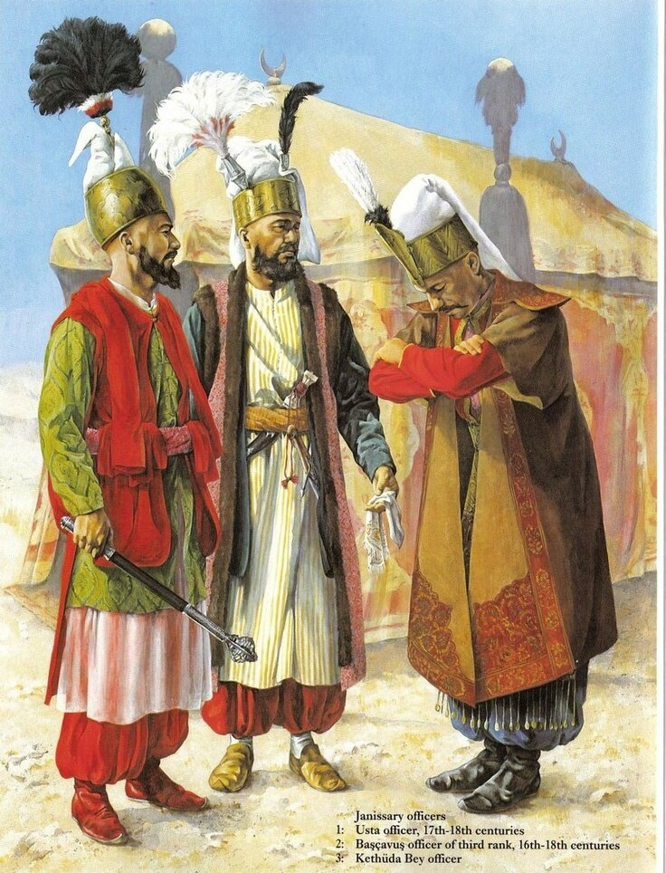

george_rooke (поздравление ему с Днем рождения и самые лучшие пожелания!) вспомнил о подборке моих постов, посвященных битве при Лепанто. Спасибо ему, эта его запись поспособствовала росту числа читателей, заинтересовавшихся моим журналом. Это приятно. Но этот же пост заставил меня сделать то, что я делаю крайне редко: перечитать старые записи. В целом, больших грехов не обнаружил, хотя сейчас я бы кое-что переписал. Но не в этом вопрос. А в том, что рука снова потянулась к клавиатуре, чтобы завершить-таки историю Лепанто и вместе с завершающим сражением на южном фланге баталии показать уроки, которые преподали моряки тех времен будущим своим коллегам. Одним словом, захотелось вернуться к Лепанто. И к его действующим лицам.
george_rooke (поздравление ему с Днем рождения и самые лучшие пожелания!) вспомнил о подборке моих постов, посвященных битве при Лепанто. Спасибо ему, эта его запись поспособствовала росту числа читателей, заинтересовавшихся моим журналом. Это приятно. Но этот же пост заставил меня сделать то, что я делаю крайне редко: перечитать старые записи. В целом, больших грехов не обнаружил, хотя сейчас я бы кое-что переписал. Но не в этом вопрос. А в том, что рука снова потянулась к клавиатуре, чтобы завершить-таки историю Лепанто и вместе с завершающим сражением на южном фланге баталии показать уроки, которые преподали моряки тех времен будущим своим коллегам. Одним словом, захотелось вернуться к Лепанто. И к его действующим лицам.В качестве введения поднимем еще раз тему отступников-христиан на службе султанов Османской империи. Наше внимание к этому вопросу понятно – ведь командующий южным флангом турецкого флота при Лепанто Улудж Али был ренегат, бывший христианин. Мы уже подробно писали об этом, сейчас поделимся более общими соображениями.

У народов христианской культурной традиции ренегат – это человек, который перешел из христианства в другую веру. У турок христианских ренегатов называли mühtedi – мухтеди, от арабского muhtadī (مهتدي), которое, в свою очередь, является причастием от ihtidā’ (إهتداء), ихтида’ – становиться на верный путь, исправляться (морально). Происхождение этого термина понятно, ведь согласно исламу ихтида’ - это не принятие новый веры, а возврат к прежней. Потому что, опять же согласно исламу, естественной верой, с которой рождается каждый человек, является ислам. А значит и не требуется никаких церемоний при совершении ихтида’, кроме произношения келиме-и шахадет («Нет бога кроме Аллаха и Мухаммад пророк Аллаха»). Этого достаточно, чтобы человек считался мусульманином.
Известно, что в Османской империи ислам получил распространение в форме ханафитского мазхаба, наиболее умеренной по сравнению с другими школами суннитского ислама. Это проявлялось, в частности, в предоставлении в Турции достаточно широких прав лицам, перешедшим из других монотеистических религий. Иногда эти права были даже значительно шире, чем права представителей другой ветви ислама – шиитов. Отсюда и наличие большого числа христианских ренегатов на высших постах империи, а также на командных должностях в армии и на флоте. Вот какие цифры приводит исследователь этого вопроса Orhan Koloğu:
| Турки | Воможно турки | Не турки | Неизвестно | Всего | |
|---|---|---|---|---|---|
| Великий визирь(до 1922) | 78 | 15 | 105 | 17 | 215 |
| Министры иностранных дел(до 1836) | 41 | 22 | 11 | 30 | 104 |
| Управляющие финансами(до 1835) | 54 | 36 | 20 | 56 | 166 |
| Духовные лидеры- шейхульислам(до 1922) | 122 | - | 6 | 3 | 131 |
| Всего | 295(48%) | 73(12%) | 142(23%) | 106(17%) | 616 |
Если мы разделим данные из графы «Неизвестно» пополам между турками и не турками, то получим, что примерно треть (около 200 человек) высших должностных лиц Османской империи имели нетурецкое происхождение. Даже исключив арабов и представителей других мусульманских народов, мы все равно получим от 1/7 до 1/8 всех должностей, которые занимали христиане-ренегаты, или, точнее, лица, имевшие христианские корни. Добавив к этим цифрам роль янычар, которая как раз и основывалась на отборе детей у родителей-христиан и соответствующем их воспитании и образовании, готовящем к государственной службе в Османской империи, получим уже совсем не случайный, а объективный фактор.
Но не будем придавать этому фактору только лишь религиозный или национальный характер. Не менее, а иногда и более важным было опасение испанской экспансии для других стран тогдашней Европы. Балканские страны, Франция, страны Северной Африки искали в союзе с Османской империей поддержки в борьбе против испанской угрозы. Именно в рамках этого, по определению ревнителей чистоты христианства того времени, святотатственного союза (“Empia alleanza”), Франция взяла на себя обязательства не воевать ни с кем и не захватывать в плен никого, кто был под покровительством Османской империи. И именно положения этого союзного договора стали гарантией спокойной зимовки флота Хайреддина-паши Барбароссы в гавани Ниццы. И, добавим, создавали у захваченных турками пленников-христиан внутреннее оправдание для перехода к сотрудничеству с победителем.
Если посмотрим на статистику важнейшего в военной иерархии поста Kaptanıderya – Адмирал флота, то она еще более поразительна: большинство лиц, занимавших этот пост, были из числа ренегатов:
| Турки | Воможно турки | Не турки | Неизвестно | |
|---|---|---|---|---|
| 39 (24%) | 18 (11%) | 70(43%) | 34(22%) |
Такая же картина просматривалась и на более низких ступенях командования флотом Турции и ее вассалов. Известны цифры для морского оджака (полка) Алжира в 1588 году: из 43 его капитанов 19 были ренегаты и 2 – дети ренегатов. Таким образом, и здесь сохраняется цифра 50 %.
Именно к таким ренегатам принадлежал и командующий южным флангом мусульманского флота в сражении при Лепанто Улудж Али. Но е его биографии мы вернемся в следующий раз.